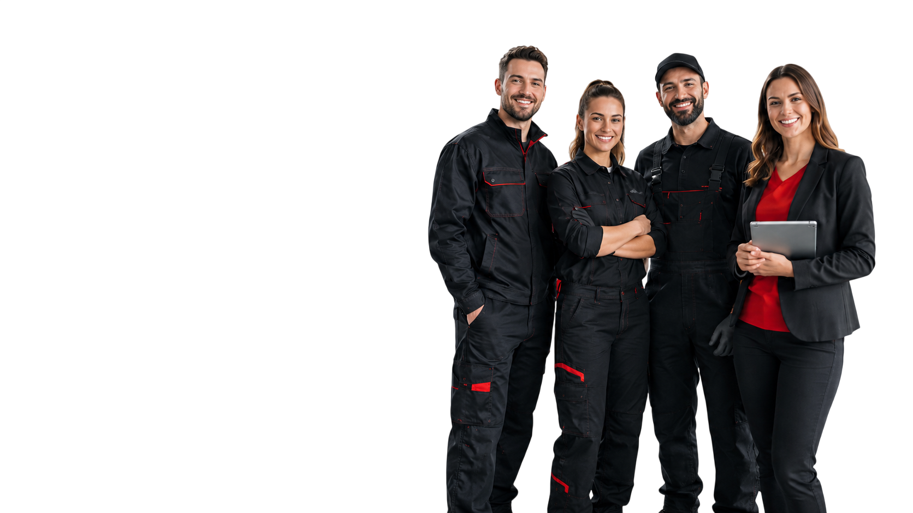
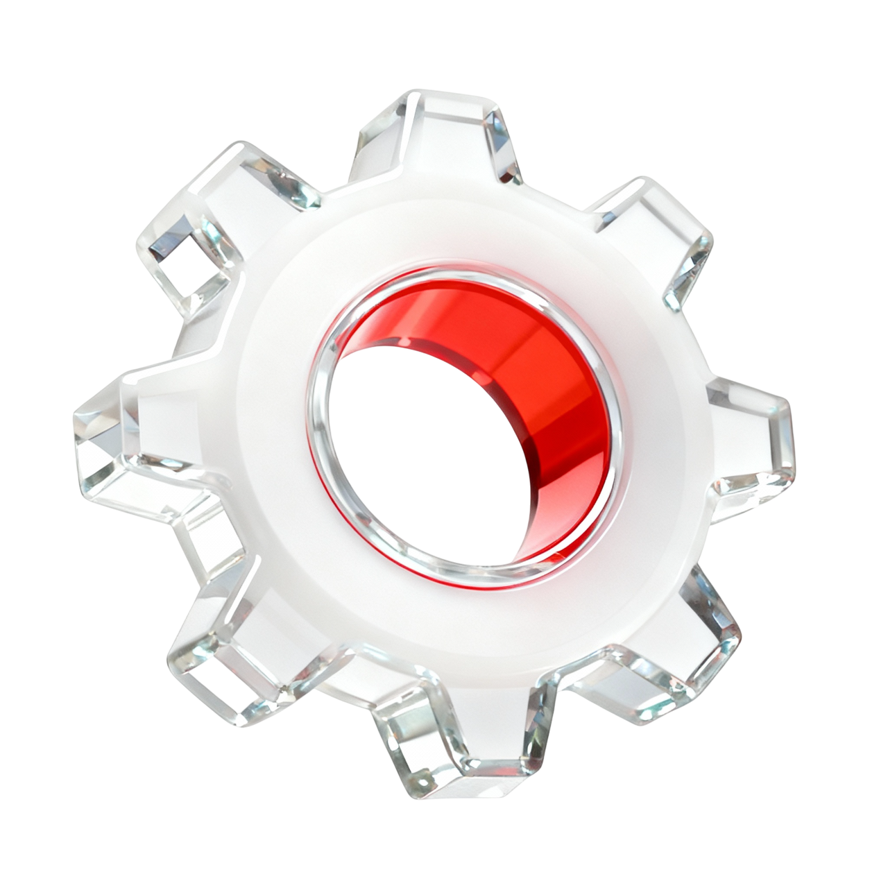

Мастер-приемщик
Опыт работы от 3 лет, среднее специальное образование, сменный график работы
Заработная плата: 100 000 - 150 000 ₽/мес.
Ховрино г. Москва, Ижорская улица, 8с1
AutoMD — автотехцентр в Москве, который специализируется на ремонте, ТО, диагностике и обслуживании коммерческого транспорта.
Мы работаем с Fiat Ducato, Ford Transit, Peugeot Boxer, Citroen Jumper, Iveco Daily, Peugeot Partner, Citroen Berlingo, Sollers Atlant, JAC Sunray и другими автомобилями, которые каждый день используются в доставке, перевозках, сервисных службах и компаниях с автопарками.
Если вы разбираетесь в автомобилях, хотите работать с понятными задачами и развиваться в профессиональном автосервисе — отправьте отклик.
Опыт работы от 3 лет, среднее специальное образование, сменный график работы
Заработная плата: 100 000 - 150 000 ₽/мес.
Ховрино г. Москва, Ижорская улица, 8с1
Опыт работы от 3 лет, среднее специальное образование, сменный график работы
Заработная плата: 100 000 - 150 000 ₽/мес.
Ховрино г. Москва, Ижорская улица, 8с1
Для популярных моделей многие детали есть в наличии — не нужно ждать поставку неделями
Большинство типовых работ выполняем в день обращения после диагностики и согласования
После ремонта объясняем, что было сделано, и фиксируем условия обслуживания
Основной фокус — Fiat Ducato, Ford Transit, Citroen Jumper, Iveco Daily, Peugeot Boxer, Peugeot Partner, Citroen Berlingo, Sollers Atlant и JAC Sunray
Подбираем детали, согласовываем стоимость, выполняем ремонт и выдаем автомобиль с гарантией
Обслуживаем личные автомобили, коммерческий транспорт и автопарки компаний


Условия зависят от вакансии, опыта специалиста и формата работы. Детали обсуждаются на собеседовании.
Если у вас есть опыт в автосервисе, подборе запчастей, диагностике или работе с клиентами, отправьте отклик. Мы рассмотрим резюме и свяжемся с вами.
В AutoMD с автомобилем работает не один человек, а команда: менеджер уточняет задачу и помогает с записью, мастер проводит диагностику и ремонт, специалист по запчастям подбирает совместимые детали, а приемщик объясняет клиенту ход работ, сроки и стоимость.
Такой подход помогает быстрее находить причину неисправности, точнее подбирать запчасти и понятнее согласовывать ремонт.

Выполняют диагностику, ТО, ремонт и замену узлов. Работают с коммерческим транспортом и знают особенности популярных моделей

Подбирают новые, оригинальные, аналоговые и б/у детали по марке, модели, году выпуска, VIN или артикулу

Проверяют электронные системы, двигатель, ходовую, тормозную систему, электрику и помогают определить реальную причину неисправности

Принимают автомобиль, фиксируют задачу клиента, согласовывают работы и объясняют, что происходит с машиной на каждом этапе

Помогают выбрать техцентр, записаться на удобное время, уточнить стоимость, наличие запчастей и условия обслуживания
Даже если сейчас нет подходящей позиции, вы можете отправить резюме. Если появится вакансия, которая подходит вашему опыту, мы сможем связаться с вами.


AutoMD приглашает специалистов по ремонту и обслуживанию коммерческого транспорта в Москве. В техцентрах работают мастера-приемщики, автослесари, диагносты, специалисты по запчастям и клиентские менеджеры.
Мы специализируемся на Fiat Ducato, Ford Transit, Peugeot Boxer, Citroen Jumper, Iveco Daily и других рабочих автомобилях. Сотрудники получают понятные задачи, оборудованное рабочее место и поддержку опытной команды.
Условия зависят от вакансии и опыта кандидата. Откликнитесь на открытую позицию или отправьте резюме — мы рассмотрим его для текущих и будущих вакансий AutoMD.